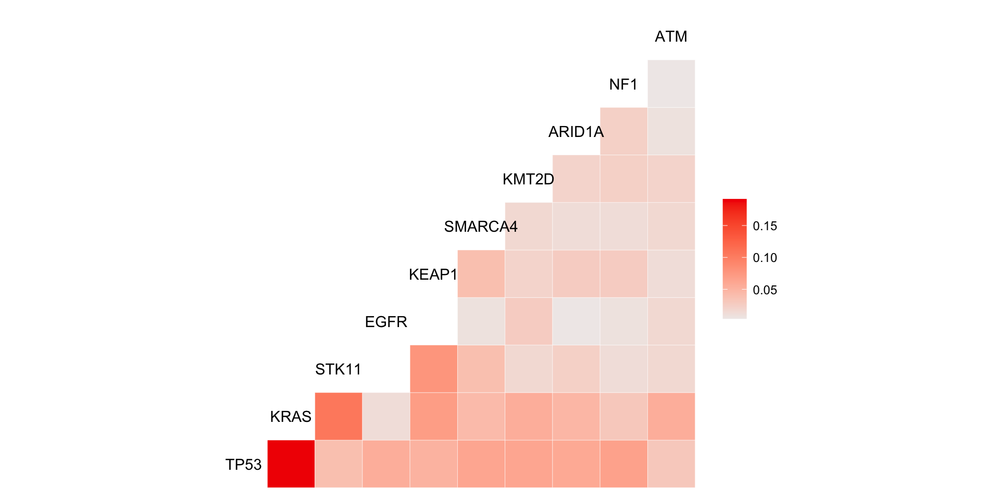

Case Study
Using the cohort of patients who were diagnosed with Stage IV adenocarcinoma NSCLC, we will:
Process data into a n patients x p alterations matrix of events (0 = no alteration, 1 = alteration)
Summarize genomic alteration frequencies and analyze differences between males and females.
nsclc_cohort <- create_analytic_cohort(
data_synapse =
nsclc_synapse_data$NSCLC_v2.0,
stage_dx = c("Stage IV"),
histology = "Adenocarcinoma",
regimen_drugs =
c("Carboplatin, Pemetrexed Disodium",
"Cisplatin, Pemetrexed Disodium",
"Bevacizumab, Carboplatin, Pemetrexed Disodium",
"Bevacizumab, Cisplatin, Pemetrexed Disodium"),
regimen_type = "Exact",
regimen_order = 1,
regimen_order_type = "within cancer",
return_summary = TRUE
)| Characteristic | N = 2411 |
|---|---|
| naaccr_sex_code | |
| Female | 145 (60%) |
| Male | 96 (40%) |
| 1 n (%) | |
Overview of Genomic Data
We will be processing and analyzing data on:
1) Mutations
1) Discrete Copy Number Alterations
1) Fusions
Processing Data
Issues When Processing Multi-Institutional Genomic Data
- Multiple Samples Per Patient
- We often need to select a single sample per patient for analyses
- Data Formats & Gene Standards Often Inconsistent
- Column names, data formats and gene names may differ between studies or even within studies
- Cohort Inclusion
- Samples with no alterations may be dropped when pulling data
- Multi-Institutional Studies Use Several Gene Panels
- Samples may be sequenced using different panels therefore the non overlapping genes have to be annotated as missing
Select One Sample Per Patient
- Multiple Samples Per Patient
- We often need to select a single sample per patient for analyses
- Patients can have many NGS values
- We can use
select_unique_ngs()to choose 1 per patient - This function prioritizes characteristics of interest and breath of genes sequenced
- However, if patients only has one report, it will be returned regardless
| Select One Sample Per Patient
- Multiple Samples Per Patient
- We often need to select a single sample per patient for analyses
Format Data in Analysis-ready Matrix
Next we want to get our genomic data in an analysis-friendly format.
create_gene_binary()from {gnomeR} will give us a data frame of n patients by p alterations.Alteration columns are denoted by the gene name if mutation (e.g.
TP53) or gene name + .Amp, .fus, .Del (TP53.Del) for other alterations types.Each cell will have
0if no alteration,1if altered, orNAif that gene was not tested in that patient.
| sample_id | CREBBP | GLI2 | KRAS | MAP3K1 | PIK3C2B | PBRM1 |
|---|---|---|---|---|---|---|
| GENIE-DFCI-004022-1313 | 0 | 0 | 0 | 0 | 0 | NA |
| GENIE-DFCI-000013-8840 | 0 | 0 | 1 | 0 | 0 | 0 |
| GENIE-DFCI-000136-6004 | 0 | 0 | 1 | 0 | 0 | 0 |
| GENIE-DFCI-000215-8010 | 0 | 0 | 0 | 0 | 0 | 0 |
| GENIE-DFCI-000381-9526 | 0 | 0 | 0 | 0 | 0 | 0 |
Get Data in Standardized Format
- Data Formats & Gene Standards Often Inconsistent
- Column names, data formats and gene names may differ between studies or even within studies!
{gnomeR} functions are designed to work with standard alteration data formats used in common platforms like cBioPortal.
We need to reformat GENIE CNA and fusions data to get it into this standard format.
Get Data in Standardized Format
Format fusions to follow the cBioPortal standard:
Before:
| Hugo_Symbol | Tumor_Sample_Barcode | Fusion |
|---|---|---|
| TP53 | GENIE-MSK-P-0004827-T01-IM5 | TP53-intragenic |
| XPO1 | GENIE-MSK-P-0004827-T01-IM5 | XPO1-USP34 fusion |
| USP34 | GENIE-MSK-P-0004827-T01-IM5 | XPO1-USP34 fusion |
After:
| sample_id | site_1_hugo_symbol | site_2_hugo_symbol | fusion |
|---|---|---|---|
| GENIE-MSK-P-0003446-T01-IM5 | ALK | EML4 | ALK-EML4 |
| GENIE-MSK-P-0003863-T01-IM5 | FLT4 | NA | FLT4 |
| GENIE-MSK-P-0004103-T01-IM5 | BRAF | SND1 | BRAF-SND1 |
| GENIE-MSK-P-0004336-T01-IM5 | CD74 | ROS1 | CD74-ROS1 |
| GENIE-MSK-P-0004827-T01-IM5 | TP53 | NA | TP53 |
| GENIE-MSK-P-0004827-T01-IM5 | USP34 | XPO1 | USP34-XPO1 |
Get Data in Standardized Format
Format CNA to follow the cBioPortal standard:
Before:
| Get Data in Standardized Format
Format Data in Analysis-ready Matrix
Data is now in standardized format and can be processed using {gnomeR}
create_gene_binary()We will add additional arguments to
create_gene_binary()to help address remaining data processing issues
Basic code:
Cohort Inclusion
- Cohort Inclusion
- Samples with no alterations may be dropped when pulling raw genomic data
The samples argument will ensure all study IDs have a row in resulting analysis data, even if they are not present in genomic files
Not All Patients Tested on Same Panel
- Multi-Institutional Studies Use Several Gene Panels
- Samples may be sequenced using different panels therefore the non overlapping genes have to be annotated as missing
Not All Patients Tested on Same Panel
To use specify_panels, we first need to create a data frame indicating which patient IDs were sequenced on which panels.
nsclc_panels <- data.frame(
sample_id = nsclc_samp$cpt_genie_sample_id,
panel_id = nsclc_samp$cpt_seq_assay_id) %>%
mutate(panel_id = ifelse(!is.na(panel_id),
panel_id, "no"))
nsclc_panels %>% head() | sample_id | panel_id |
|---|---|
| GENIE-DFCI-000013-8840 | DFCI-ONCOPANEL-2 |
| GENIE-DFCI-000136-6004 | DFCI-ONCOPANEL-2 |
| GENIE-DFCI-000215-8010 | DFCI-ONCOPANEL-2 |
| GENIE-DFCI-000381-9526 | DFCI-ONCOPANEL-2 |
| GENIE-DFCI-000410-10003 | DFCI-ONCOPANEL-2 |
| GENIE-DFCI-000583-11175 | DFCI-ONCOPANEL-2 |
Not All Patients Tested on Same Panel
Without Panel Annotation
| sample_id | panel_id | GLI2 | KRAS | PIK3C2B | PBRM1 |
|---|---|---|---|---|---|
| GENIE-DFCI-004022-1313 | DFCI-ONCOPANEL-1 | 0 | 0 | 0 | 0 |
| GENIE-DFCI-000013-8840 | DFCI-ONCOPANEL-2 | 0 | 1 | 0 | 0 |
| GENIE-MSK-P-0002725-T01-IM3 | MSK-IMPACT341 | 0 | 1 | 0 | 0 |
| GENIE-MSK-P-0017722-T02-IM6 | MSK-IMPACT468 | 0 | 0 | 0 | 0 |
With Panel Annotation
| sample_id | panel_id | GLI2 | KRAS | PIK3C2B | PBRM1 |
|---|---|---|---|---|---|
| GENIE-DFCI-004022-1313 | DFCI-ONCOPANEL-1 | 0 | 0 | 0 | NA |
| GENIE-DFCI-000013-8840 | DFCI-ONCOPANEL-2 | 0 | 1 | 0 | 0 |
| GENIE-MSK-P-0002725-T01-IM3 | MSK-IMPACT341 | NA | 1 | NA | 0 |
| GENIE-MSK-P-0017722-T02-IM6 | MSK-IMPACT468 | NA | 0 | NA | 0 |
Ensure Gene Names Are Consistent Across Studies
- Data Formats & Gene Standards Often Inconsistent
- Column names, data formats and gene names may differ between studies or even within studies!
| Process Data: Final Dataset
Lets run create_gene_binary() with the samples, specify_panel and recode_aliases arguments.
First we create nsclc_panels:
Then run create_gene_binary():
Analyzing Data
Issues When Analyzing Multi-Institutional Genomic Data
- Multiple Testing and False Positives
- Many hypothesis tests done simultaneously can lead to high rate of false positive findings.
- Very low prevalence genes are often not very informative.
- Choose a threshold (e.g. 1% or 5 %) a prior to limit number of hypothesis tests and consider reporting Report q-value (adjusted for multiple testing).
- Limited Power To Detect Clinical Associations When Sparse Alterations
- If biologically meaningful, you may want to summarize on Alteration, Gene or Pathway Level
Case Study
We will use the processed binary data frame data (
gene_binary) to summarize genomic alterations overall in the cohort, and by sex.First, we will need to join clinical data on
sexto genomic data
| Add Clinical Variable To Data
patient_index <- nsclc_cohort$cohort_ngs %>%
select(record_id, cpt_genie_sample_id)
select_clinical <- nsclc_cohort$cohort_pt_char %>%
select(record_id, naaccr_sex_code) %>%
left_join(patient_index)
gene_binary <- gene_binary %>%
left_join(select_clinical, by = c("sample_id"= "cpt_genie_sample_id")) %>%
select(-record_id)
gene_binary <- gene_binary %>%
select(sample_id, naaccr_sex_code, everything())
gene_binary %>%
select(naaccr_sex_code) %>%
tbl_summary()| Characteristic | N = 2411 |
|---|---|
| naaccr_sex_code | |
| Female | 145 (60%) |
| Male | 96 (40%) |
| 1 n (%) | |
Subset By a Prevalence Threshold
- Multiple Testing and False Positives
- Very low prevalence genes are often not very informative. Choose a threshold (e.g. 1% or 5 %) a prior to limit number of hypothesis tests.
Use
subset_by_frequency()to subset genes above a given threshold.tindicates a threshold between 0 (t = 0) and 100% (t = .1) prevalence.other_varsretains the clinical variable of interest in the resulting data set.
| Subset By 40% Threshold
Subset by a Panel
Use subset_by_panel() to subset only genes in a given panel.
Summarize Alterations with tbl_genomic()
tbl_genomic()is a wrapper function forgtsummary::tbl_summary()specifically designed for presenting genomic data:You can use any {gtsummary} function on top of
tbl_genomic()to customize table further (e.g.bold_labels())
| Summarize Alterations with tbl_genomic
Create a simple tbl_genomic object, then bold the labels.
Summarize Genes with tbl_genomic()
You may want to analyze on the gene level only. Use summarize_by_gene() first, then pass to tbl_genomic():
| Characteristic | N = 2411 |
|---|---|
| TP53 | 135 (56%) |
| GBA | 17 (46%) |
| Unknown | 204 |
| PTK2B | 17 (46%) |
| Unknown | 204 |
| KRAS | 107 (44%) |
| WRN | 38 (41%) |
| Unknown | 149 |
| JAZF1 | 15 (41%) |
| Unknown | 204 |
| 1 n (%) | |
Summarize Genes with tbl_genomic()
Note: If you only want to analyzed data above a certain threshold, you will first need to summarize_by_gene() before passing to subset_by_frequency() or certain alterations may be omitted
| Characteristic | N = 2411 |
|---|---|
| TP53 | 135 (56%) |
| GBA | 17 (46%) |
| Unknown | 204 |
| PTK2B | 17 (46%) |
| Unknown | 204 |
| KRAS | 107 (44%) |
| WRN | 38 (41%) |
| Unknown | 149 |
| JAZF1 | 15 (41%) |
| Unknown | 204 |
| 1 n (%) | |
Summarize Oncogenic Pathways
- Limited Power To Detect Clinical Associations When Sparse Alterations
- If biologically meaningful, you may want to summarize on Alteration, Gene or Pathway Level
Often we want to analyze alterations on the pathway level.

Summarize Oncogenic Pathways
- Limited Power To Detect Clinical Associations When Sparse Alterations
- If biologically meaningful, you may want to summarize on Alteration, Gene or Pathway Level
{gnomeR} offers several default pathways that can be added with add_pathways()
Summarize Oncogenic Pathways
You can also add a custom pathway:
path_df <- gene_binary %>%
add_pathways(custom_pathways = c("SPOP.mut", "FOXA1.mut"))
path_df %>% select("pathway_custom") %>%
tbl_summary()| Characteristic | N = 2411 |
|---|---|
| pathway_custom | 2 (0.8%) |
| 1 n (%) | |
Note: You must specify .mut, .Amp, .Del for custom pathways
| Summarize Alteration Pathways
| Characteristic | N = 2411 |
|---|---|
| pathway_RTK/RAS | 217 (90%) |
| pathway_Nrf2 | 48 (20%) |
| pathway_PI3K | 114 (47%) |
| pathway_TGFB | 34 (14%) |
| pathway_p53 | 181 (75%) |
| pathway_Wnt | 51 (21%) |
| pathway_Myc | 70 (29%) |
| pathway_Cell cycle | 90 (37%) |
| pathway_Hippo | 31 (13%) |
| pathway_Notch | 72 (30%) |
| 1 n (%) | |
Comparing Alteration Frequencies Across Clinical Data
We can easily compare frequencies by sex using the by argument:
| Characteristic | Overall, N = 2411 | Female, N = 1451 | Male, N = 961 |
|---|---|---|---|
| TP53 | 124 (51%) | 72 (50%) | 52 (54%) |
| GBA.Amp | 17 (46%) | 8 (36%) | 9 (60%) |
| Unknown | 204 | 123 | 81 |
| KRAS | 98 (41%) | 66 (46%) | 32 (33%) |
| JAZF1.Amp | 15 (41%) | 9 (41%) | 6 (40%) |
| Unknown | 204 | 123 | 81 |
| 1 n (%) | |||
Comparing Alteration Frequencies Across Clinical Data
- Multiple Testing and False Positives
::: {.cell hash=r-medicine-genie-gnomer_cache/revealjs/unnamed-chunk-48_b0a33e93ef419badf8d1ee3780214ec2}
gene_binary %>%
subset_by_frequency(
t = .4,
other_vars = naaccr_sex_code) %>%
tbl_genomic(
by = naaccr_sex_code) %>%
bold_labels() %>%
add_p() %>%
add_q()| Characteristic | Overall, N = 2411 | Female, N = 1451 | Male, N = 961 | p-value2 | q-value3 |
|---|---|---|---|---|---|
| TP53 | 124 (51%) | 72 (50%) | 52 (54%) | 0.5 | 0.7 |
| GBA.Amp | 17 (46%) | 8 (36%) | 9 (60%) | 0.2 | 0.3 |
| Unknown | 204 | 123 | 81 | ||
| KRAS | 98 (41%) | 66 (46%) | 32 (33%) | 0.059 | 0.2 |
| JAZF1.Amp | 15 (41%) | 9 (41%) | 6 (40%) |
0.9 |
0.9 |
| Unknown | 204 | 123 | 81 | ||
| 1 n (%) | |||||
| 2 Pearsons Chi-squared test | |||||
| 3 False discovery rate correction for multiple testing | |||||
:::
| Comparing Alteration Frequencies Across Clinical Data
::: {.cell hash=r-medicine-genie-gnomer_cache/revealjs/unnamed-chunk-49_ba14ef963ac62f6844b5e2eef7516c15}
tbl_gene <- gene_binary %>%
subset_by_frequency(
t = .4,
other_vars = naaccr_sex_code) %>%
tbl_genomic(by = naaccr_sex_code) %>%
bold_labels() %>%
add_p() %>%
add_q()
tbl_gene | Characteristic | Overall, N = 2411 | Female, N = 1451 | Male, N = 961 | p-value2 | q-value3 |
|---|---|---|---|---|---|
| TP53 | 124 (51%) | 72 (50%) | 52 (54%) | 0.5 | 0.7 |
| GBA.Amp | 17 (46%) | 8 (36%) | 9 (60%) | 0.2 | 0.3 |
| Unknown | 204 | 123 | 81 | ||
| KRAS | 98 (41%) | 66 (46%) | 32 (33%) | 0.059 | 0.2 |
| JAZF1.Amp | 15 (41%) | 9 (41%) | 6 (40%) |
0.9 |
0.9 |
| Unknown | 204 | 123 | 81 | ||
| 1 n (%) | |||||
| 2 Pearsons Chi-squared test | |||||
| 3 False discovery rate correction for multiple testing | |||||
:::
Visualize Data
Visualize Data
Additional Items & Next Steps
Additional visualizations and color palettes useful for genomic data are available in {gnomeR} package
Some data may require additional QA-ing. See {gnomeR vignette} for more information: https://mskcc-epi-bio.github.io/gnomeR/articles/qa-impact-data.html
It may be appropriate to oncoKB annotate your data and only analyze oncogenic mutations (see oncoKB.org for more information)
Some projects may utilize CNA Segmentation data. See gnomeR vignette for more information: https://mskcc-epi-bio.github.io/gnomeR/